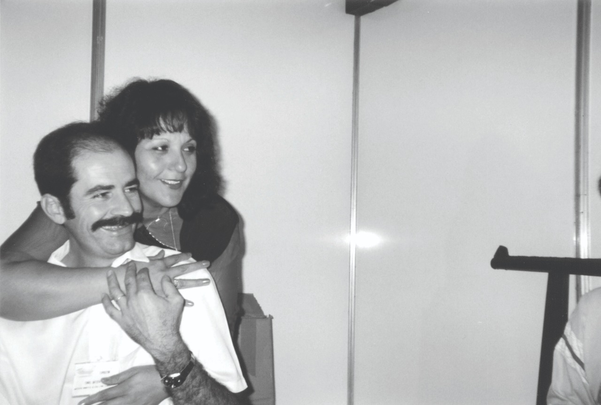

Quem somos
Conheça um pouco da história da Studio 141
Foi fundada em 2009 pelos irmãos Antônio e Joana Tades.
Há 11 anos no mercado, a Studio 141 passa por um processo de inovação com o compromisso de garantir a qualidade dos produtos com a eficácia e excelência em atendimento de sempre.
Utilizamos o que existe de melhor em tecnologia e resistência aos nossos produtos, gerando equipamentos duráveis e práticos.
Desenvolvimento e crescimento com responsabilidade e dinamismo é o foco da nossa empresa. Atendimento especial, ótima relação custo x benefício e evolução direta em todos os setores representam o controle de qualidade dos padrões Studio 141.
Nosso intuito é auxiliar os artistas no seu ambiente natural, o palco, sem tentar disputar a atenção do público e acompanhá-los aonde forem, por isso nosso lema é com você nos palcos.
Missão, visão e valores
Missão
Desenvolver acessórios de qualidade para atender as necessidades de todos os tipos de músicos do Brasil e do mundo agregando conforto e praticidade em suas atividades.
Visão
Pesquisar e produzir tecnologia voltada para a segurança e eficiência no uso diário de seus produtos.
Valores
Comunicação, organização, ética, transparência, efetividade, competência, simpatia e sustentabilidade.